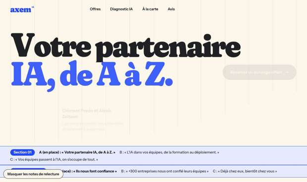

La plus avancée
Version 7
La plus avancée (19/11)
Trois portes : Former, Équiper, Automatiser. Licences, diagnostic IA, sections numérotées 01 à 08 pour la revue à deux. Photos sur fond blanc.
Duo : « Vous travaillez avec nous deux », portraits sur fond blanc.